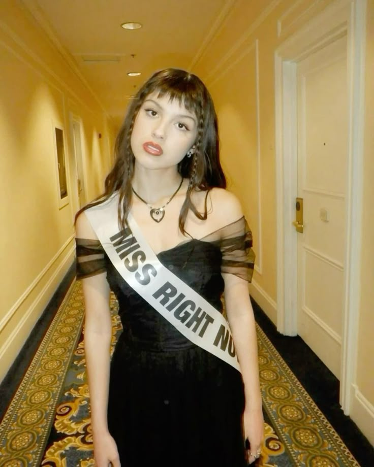
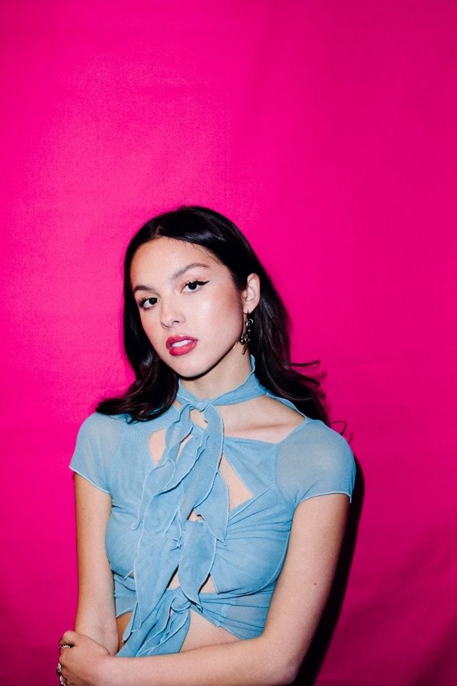
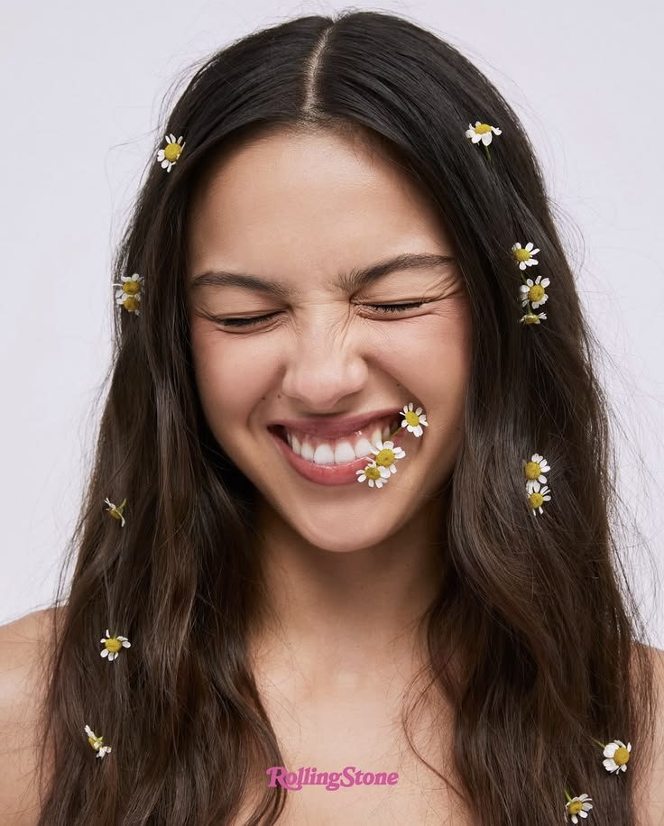
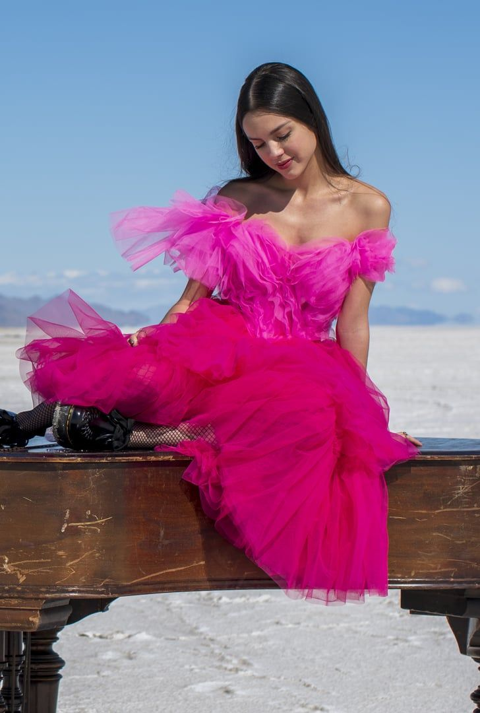
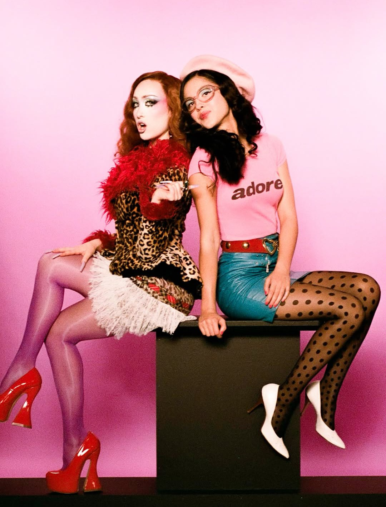
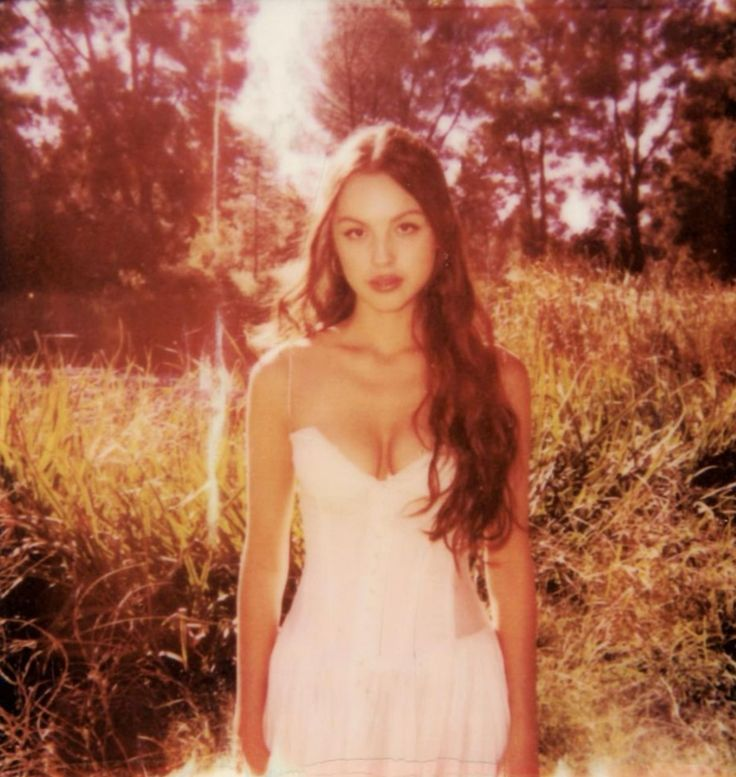

“obsessed” fue uno de los cinco temas agregados a GUTS (spilled) y continúa con la temática de inseguridad que aparece en varias canciones del álbum. Olivia habla de compararse con los exes de su pareja y de no poder dejar de pensar en ellas. Musicalmente es mucho más agresiva y rockera, con guitarras y una interpretación vocal llena de energía. El concepto de la canción muestra cómo los celos pueden convertirse en pensamientos repetitivos que se vuelven difíciles de controlar. De esta manera, “obsessed” amplía el universo de GUTS mostrando otra versión de las inseguridades amorosas de Olivia.

“girl i’ve always been” tiene una energía mucho más juguetona y despreocupada que varias de las canciones del álbum original. Olivia habla sobre su personalidad y sobre cómo, a pesar de cambiar y crecer, hay ciertas características que siempre estuvieron presentes en ella. La canción tiene influencias del folk y del pop-rock, creando una sensación cálida y diferente dentro de GUTS. En lugar de intentar convertirse en alguien nuevo para otra persona, Olivia decide reivindicar quién es realmente. Por eso, funciona como una especie de declaración de identidad dentro de la edición spilled.
“scared of my guitar” es una de las canciones más íntimas de GUTS (spilled) y presenta a Olivia prácticamente sola con su guitarra. La canción habla del miedo a enfrentarse a sentimientos que aparecen cuando está escribiendo y cantando sobre ellos. La guitarra funciona como una herramienta que le permite decir cosas que quizás no se atrevería a expresar directamente. Su sonido sencillo y acústico contrasta con las canciones más explosivas de GUTS. Es un momento especialmente vulnerable porque Olivia deja de esconder sus emociones detrás del humor y decide enfrentarse a ellas directamente.
“stranger” presenta una perspectiva mucho más madura sobre una relación que ya terminó. Olivia imagina un futuro en el que puede encontrarse con esa persona sin sentir el mismo dolor que sentía antes. El sonido es suave y melancólico, pero también transmite una sensación de tranquilidad que no aparece tanto en otras canciones del álbum. La idea principal es que alguien que alguna vez fue extremadamente importante puede terminar convirtiéndose prácticamente en un desconocido. Por eso, la canción funciona como una especie de respuesta más adulta a muchas de las canciones de desamor que aparecen anteriormente en GUTS.

“so american” cierra GUTS (spilled) con una energía completamente diferente y mucho más romántica. La canción habla de estar enamorada de alguien extranjero y de sentirse tan feliz con esa persona que comienza a adoptar algunas de sus costumbres. Musicalmente vuelve al pop-rock más divertido y acelerado, creando un cierre mucho más alegre que “teenage dream”. Después de tantas canciones sobre inseguridades, rupturas y miedo a crecer, Olivia termina esta edición especial del álbum mostrando una relación desde un lugar mucho más positivo. Es un final que demuestra que GUTS no solamente trata sobre el dolor de crecer, sino también sobre aprender a disfrutar las nuevas experiencias que aparecen en el camino.

“All I Want” forma parte de la banda sonora de High School Musical: The Musical: The Series (2019), antes del lanzamiento del álbum SOUR. La letra habla de la decepción amorosa y de la frustración de querer encontrar a alguien que realmente la quiera y la valore. A través de su interpretación, Olivia se pregunta por qué sus relaciones nunca terminan como esperaba.

"Expectations (Remix ft. ChappellbRoan)" fue lanzada el 15 de octubre de 2026, esta colaboración revive una de las canciones más importantes de su álbum You Seem Pretty Sad for a Girl So in Love. La versión remix eleva la propuesta original al añadir una perspectiva queer junto a Chappell Roan. En la letra, ambas artistas hablan sobre los límites, las exigencias y los estándares en las relaciones amorosas.

“Can’t Catch Me Now” fue publicada el 3 de noviembre de 2023 como parte de la banda sonora de The Hunger Games: The Ballad of Songbirds & Snakes. La canción habla sobre la sensación de libertad, resistencia y venganza. A diferencia de las canciones más personales de SOUR y GUTS, Olivia usa una perspectiva narrativa que permite relacionar sus emociones con la historia y los conflictos de la película.

"Serena Joy" fue publicada en agosto de 2026 como un sencillo, la canción tienen el nombre del icónico personaje de la novela El cuento de la criada. El tema aborda cuestiones como el patriarcado y la opresión social, advirtiendo sobre cómo apoyar ciertos sistemas de poder a la larga estos pueden actuar en tu contra. Esta canción tiene una de las letras con mayor carga social y crítica política.